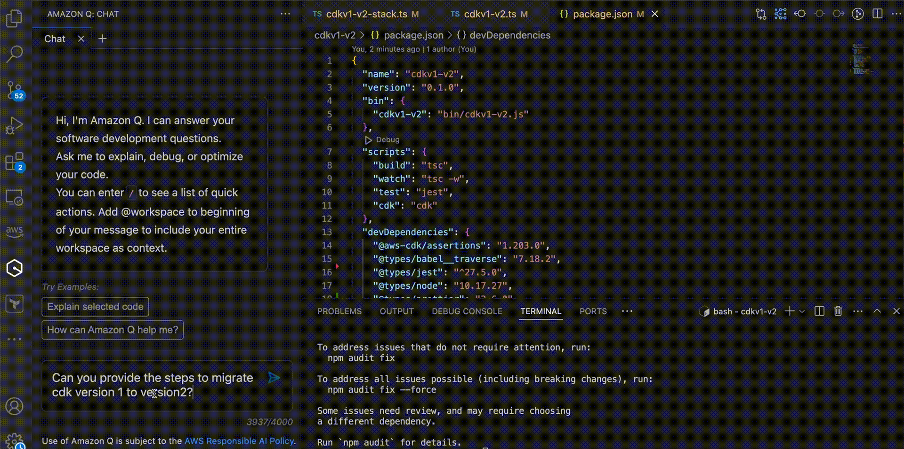
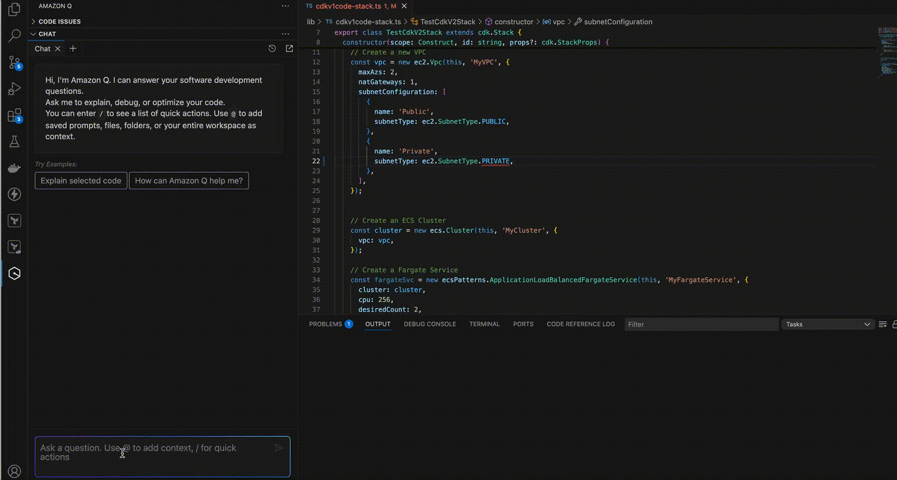

Blog 2
Di chuyển ứng dụng CDK phiên bản 1 sang CDK phiên bản 2 với Amazon Q Developer
bởi Tiến sĩ Rahul Sharad Gaikwad, Tamilselvan P và Vinodkumar Mandalapu vào ngày 30 tháng 4 năm 2025 trên Amazon Q.
Giới thiệu:
Bộ công cụ phát triển đám mây AWS (AWS CDK) là một khung phát triển phần mềm mã nguồn mở để xác định cơ sở hạ tầng đám mây trong mã và cung cấp thông qua AWS CloudFormation. Kể từ ngày 1 tháng 6 năm 2023, AWS CDK phiên bản 1 không còn được hỗ trợ. Để tránh các vấn đề tiềm ẩn khi sử dụng phiên bản lỗi thời và tận dụng các tính năng và cải tiến mới nhất, chúng tôi khuyên bạn nên nâng cấp lên AWS CDK phiên bản 2.
Amazon Q Developer, một trợ lý tổng quát được hỗ trợ bởi AI để phát triển phần mềm, nâng cao hiệu quả của các nhóm phát triển phần mềm. Nó tạo điều kiện thuận lợi cho việc tạo cơ sở hạ tầng sẵn sàng triển khai dưới dạng mã (IaC) cho AWS CloudFormation, AWS CDK và Terraform. Bằng cách sử dụng Amazon Q, các nhà phát triển có thể tăng tốc phát triển IaC, nâng cao chất lượng mã và giảm khả năng xảy ra lỗi cấu hình.
Bài đăng này trình bày cách Amazon Q Developer hỗ trợ nâng cấp ứng dụng AWS CDK v1 hiện có lên AWS CDK v2.
Điều kiện tiên quyết
-
ID AWS Builder hoặc thông tin đăng nhập Trung tâm nhận dạng AWS IAM do tổ chức của bạn kiểm soát
-
IDE được hỗ trợ, chẳng hạn như Visual Studio Code
-
Tiện ích mở rộng IDE của Bộ công cụ AWS
-
Nodejs
-
AWS CDK phiên bản 1
-
AWS CDK phiên bản 2
Kế hoạch
Trong bài đăng trên blog này, tôi sẽ khám phá một ví dụ về mã mà tôi đã tạo VPC, Mạng con và cụm ECS Fargate bằng AWS CDK phiên bản 1. Sau đó, tôi sẽ giải thích cách bạn có thể sử dụng Amazon Q để chuyển đổi mã từ CDK v1 sang CDK v2.
1. Để bắt đầu quá trình này, tôi đã bắt đầu bằng cách yêu cầu Nhà phát triển Amazon Q cung cấp các bước cần thiết để di chuyển từ CDK phiên bản 1 sang phiên bản 2, được nêu dưới đây.
Can you provide the steps to migrate from cdk version 1 to version 2?

2. Trong ảnh chụp màn hình trên, Amazon Q Developer đã phác thảo một số bước chúng tôi có thể thực hiện để thực hiện các thay đổi cần thiết. Bước đầu tiên là cập nhật các phần phụ thuộc. Nếu tôi cần hướng dẫn về cách cập nhật các phần phụ thuộc, tôi có thể yêu cầu Nhà phát triển Amazon Q trợ giúp một lần nữa bằng cách yêu cầu các bước liên quan đến cập nhật các phần phụ thuộc như bên dưới.
Can you provide the steps to update dependencies?

3. Sau khi cập nhật các phần phụ thuộc, bước tiếp theo là cập nhật các câu lệnh nhập. Để được hướng dẫn về cách cập nhật các câu lệnh nhập, tôi có thể yêu cầu trợ lý nhà phát triển Amazon Q trợ giúp một lần nữa bằng cách hỏi các bước liên quan đến cách nhập các câu lệnh như hình dưới đây.
@workspace Can you provide the steps to update import statements?

Trong ảnh chụp màn hình ở trên, nếu bạn nhận thấy, tôi đã thêm trước câu hỏi tự động bao gồm các phần có liên quan nhất của mã không gian làm việc của tôi dưới dạng ngữ cảnh.@workspace
4. Nếu có bất kỳ lỗi nào xảy ra trong khi cập nhật mã theo khuyến nghị của Amazon Q Developer, tôi có thể sử dụng Amazon Q Developer để gỡ lỗi sự cố và cung cấp thông tin đầu vào cần thiết để giải quyết.

5. Sau khi hoàn thành các bước bắt buộc, tôi có thể triển khai ứng dụng bằng phiên bản 2 của AWS CDK bằng cách chạy lệnh.cdk deploy

6. Ngoài các khả năng khác, Amazon Q còn cung cấp chức năng xem xét mã. Để bắt đầu xem xét mã, chỉ cần chọn Amazon Q và sử dụng lệnh. Sau đó, tôi sẽ có tùy chọn để xem lại các tệp đang hoạt động hoặc toàn bộ không gian làm việc đang mở. Chọn tùy chọn của bạn và Amazon Q sẽ phân tích dự án của bạn và cung cấp kết quả đánh giá toàn diện./review

7. Amazon Q Developer cũng có thể tạo tài liệu, bao gồm các tệp README. Để tạo tài liệu, hãy chọn Amazon Q và nhập lệnh. Amazon Q sẽ tự động tạo tệp README cho dự án của bạn. Sau đó, tôi có thể xem lại tài liệu đã tạo, chấp nhận các thay đổi hoặc cung cấp hướng dẫn cụ thể để sửa đổi thêm./doc

Kết thúc
Trong blog này, tôi đã trình bày cách Amazon Q Developer có thể đơn giản hóa và đẩy nhanh quá trình nâng cấp từ AWS CDK phiên bản 1 lên phiên bản 2, đảm bảo cơ sở hạ tầng đám mây của bạn luôn bảo mật, hiệu quả và phù hợp với những cải tiến mới nhất của AWS. AWS CDK phiên bản 2 cung cấp một thư viện hợp nhất, hợp nhất được sắp xếp hợp lý với hiệu suất được cải thiện và hỗ trợ liên tục, giúp việc quản lý cơ sở hạ tầng trở nên dễ dàng và đáng tin cậy hơn.
Bằng cách tận dụng Amazon Q Developer, một trợ lý tổng quát được hỗ trợ bởi AI, các nhóm có thể tự động hóa việc phát triển Cơ sở hạ tầng dưới dạng mã, nâng cao chất lượng mã và giảm thiểu lỗi cấu hình. Cùng với nhau, các công cụ này hỗ trợ các nhóm phát triển tự tin hiện đại hóa và mở rộng quy mô môi trường AWS của họ, biến quá trình nâng cấp thành cơ hội liền mạch để đổi mới và tăng trưởng.
Tài nguyên
Để tìm hiểu thêm về Amazon Q Developer, hãy xem các tài nguyên sau:
Để tìm hiểu thêm về AWS CDK, hãy xem các tài nguyên sau:
Giới thiệu về các tác giả:
| Ảnh đại diện | Giới thiệu về các tác giả |
|---|---|
 |
Tiến sĩ Rahul Sharad Gaikwad là Kiến trúc sư giải pháp tại AWS, thúc đẩy đổi mới đám mây thông qua việc di chuyển và hiện đại hóa khối lượng công việc của khách hàng. Là một người đam mê Generative AI và DevOps, anh ấy kiến trúc các giải pháp tiên tiến và được công nhận là Đại sứ APJC HashiCorp. Ông lấy bằng tiến sĩ về AIOps và ông đã nhận được Giải thưởng Người đàn ông xuất sắc, Giải thưởng Người thành tựu Ấn Độ, Giải thưởng Luận án Tiến sĩ Xuất sắc nhất, Giải thưởng Học giả Nghiên cứu của Năm và Giải thưởng Nhà nghiên cứu trẻ. |
| Vinodkumar Mandalapu là Chuyên gia tư vấn Devops tại AWS, chuyên thiết kế và triển khai cơ sở hạ tầng dựa trên đám mây và đường ống triển khai trên AWS. Với kinh nghiệm dày dặn trong việc tự động hóa và hợp lý hóa việc phân phối phần mềm, ông đã giúp các tổ chức thuộc mọi quy mô tận dụng sức mạnh của đám mây để thúc đẩy đổi mới, cải thiện khả năng mở rộng và nâng cao hiệu quả hoạt động. Trong thời gian rảnh rỗi, anh ấy thích đi du lịch và dành thời gian chất lượng cho con trai mình. | |
| Tamilselvan P là Chuyên gia tư vấn Devops tại AWS, tập trung vào việc kiến trúc và triển khai các hệ thống gốc đám mây cũng như phân phối liên tục trong hệ sinh thái. Tận dụng chuyên môn toàn diện của mình trong việc điều phối và tinh chỉnh các quy trình phát hành phần mềm, ông đã hỗ trợ khách hàng trong nhiều ngành và quy mô khác nhau trong việc khai thác công nghệ đám mây để đổi mới nhanh hơn, tăng khả năng mở rộng và nâng cao hiệu suất hoạt động. Trong thời gian rảnh rỗi, anh ấy thích chơi cricket. |